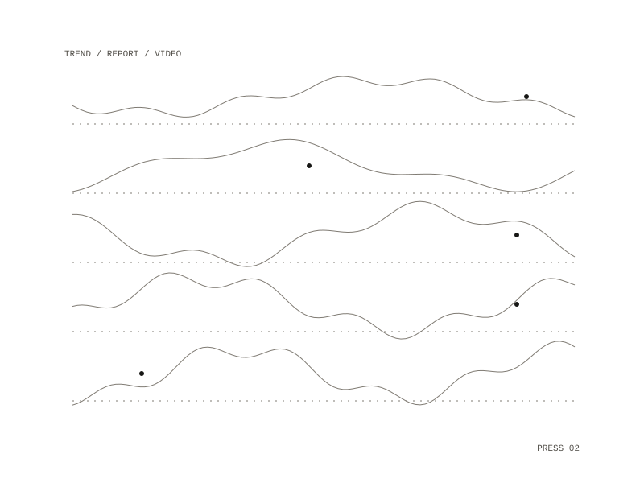

67 / project
Trend Oracle
A fashion and trend research tool that writes a trend report on demand
Trend Oracle is a fashion and trend content tool. Its first phase, a research and synthesis pipeline, was completed with 8 passing tests.

Weekly report
A run on demand writes a Markdown report named by year and week. It is written in Python, runs in a container and keeps its settings in one JSON config file.
Planned phases
- Video: turn a report into a script, a synthesized voice, image cards and an assembled video, and upload it to a short-video platform.
- Stats: after each post, collect engagement from the video platform and open rates from the newsletter, write weekly stats to a note, and add a switch from manual to autonomous mode.
- Dashboard: an engagement chart and a config editor.
Posting was to be triggered by hand at first, and a review step before anything went live was still to be defined.
Out
a Markdown report named by year and week
a Markdown report named by year and week
Settings
one JSON config file
one JSON config file
Repository: private
All work